PPT 第 1 页
CHAPTER 5
第五章 神经网络控制论
智能控制概论 · 参考课件（第三版）
PPT 第 2 页
本章内容
- 引言——神经网络控制的优越性与典型结构
- 非线性动态系统的神经网络辨识
- 神经网络控制的学习机制
- 神经网络控制器的设计
PPT 第 3–15 页
一、引言
1. 神经网络控制的优越性（P3）
由于神经网络本质上是一个大规模并行分布处理的非线性动力学系统，并在更高层次上体现出一些人脑的智能行为，为智能控制提供了新途径。神经网络控制的优越性体现在：
- 神经网络可以处理那些难以用模型或规则描述的过程或系统。
- 神经网络采用并行分布式信息处理，具有很强的容错性。
- 神经网络是本质的非线性系统。
- 神经网络具有很强的信息综合能力。
- 神经网络的硬件实现愈趋方便。
2. 神经网络控制器的分类（P4–5）
根据神经网络在控制系统中的作用不同，可分为两大类：
- 神经控制——以神经网络为基础而形成的独立智能控制系统；
- 混合神经网络控制——利用神经网络学习和优化能力来改善传统的控制方法。
典型分类（六种控制结构）：导师指导下的控制器 · 逆控制器 · 自适应网络控制器 · 前馈控制结构 · 自适应评价网络 · 混合控制系统。
3. 六种典型控制结构（P6–11）
（1）导师指导下的控制器（P6）
神经网络控制结构的学习样本直接取自于专家的控制经验。一旦神经网络的训练达到了能够充分描述人的控制行为时，则网络训练结束。
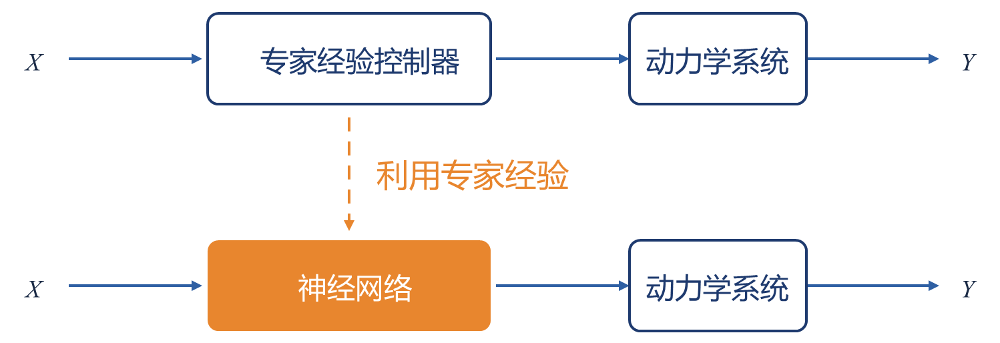
图 3-2-1 导师指导下的神经控制结构图｜重绘版 PPT 第 6 页
（2）逆控制器（P7）
如果一个动力学系统可以用一个逆动力学函数来表示，则采用简单的控制结构和方式是可能的。
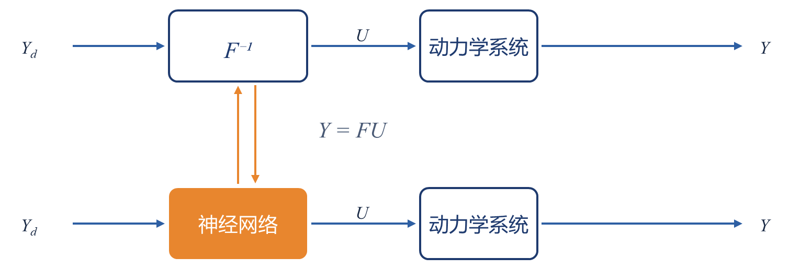
图 3-2-2 逆控制器的结构图｜重绘版 PPT 第 7 页
（3）模型参考自适应网络控制器（P8）
利用神经网络将线性系统经典的自适应控制设计理论和思想方法直接引到非线性系统自适应控制系统中来是可能的。
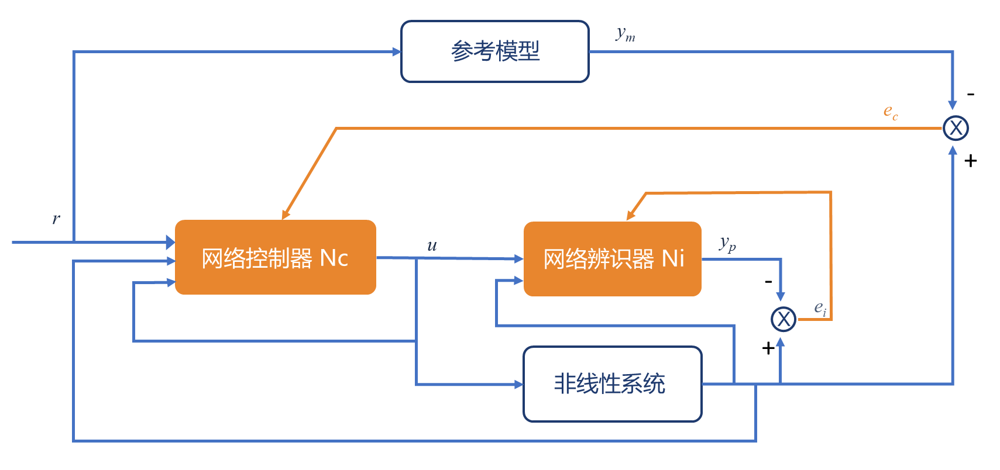
图 3-2-3 自适应网络控制结构图（$e_i$：辨识误差，$e_c$：控制误差）｜重绘版 PPT 第 8 页
（4）神经内模控制结构（P9）
系统的实际输出与模型 $M$ 的输出信号差用于反馈的目的。这个反馈信号通过前向通道上的控制子系统 $G$ 预处理。通常 $G$ 是一个滤波器，用于提高系统的鲁棒性。系统模型 $M$ 和控制器 $C$ 可以由神经网络来实现。
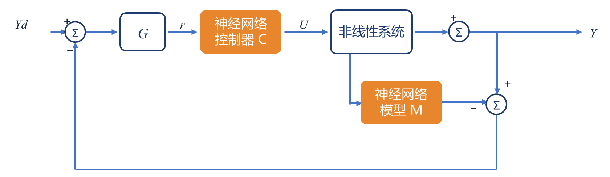
神经内模控制结构（$G$：滤波器；$M$、$C$ 均由神经网络实现）｜重绘版 PPT 第 9 页
（5）前馈控制结构（P10）
通常单纯的求逆控制结构不能很好地起到抗干扰能力，因此结合反馈控制的思想组成前馈补偿器的网络控制结构。
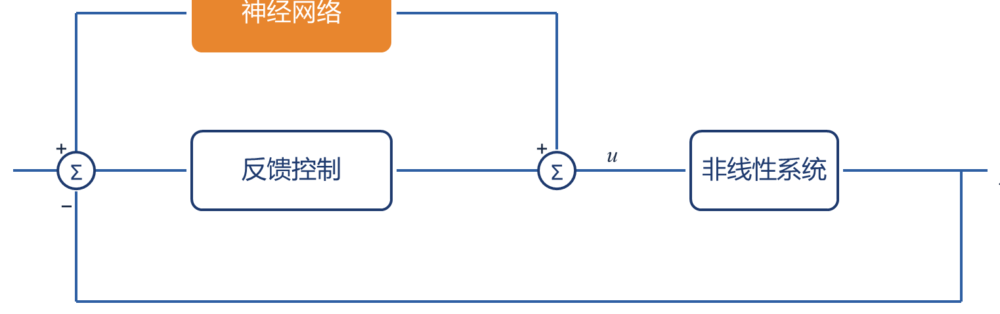
前馈控制结构（神经网络作前馈补偿器）｜重绘版 PPT 第 10 页
（6）自适应评价网络（P11）
自适应评价网络是由 Barto、Sutton 和 Anderson 在 1983 年提出来的。整个学习系统由一个相关的搜索单元和一个自适应评价单元组成：相关搜索单元是作用网络，自适应评价单元为评价网络。它不需要控制系统数学模型，只是通过对某一指标准则 $J$ 的处理和分析得到奖励或惩罚信号。
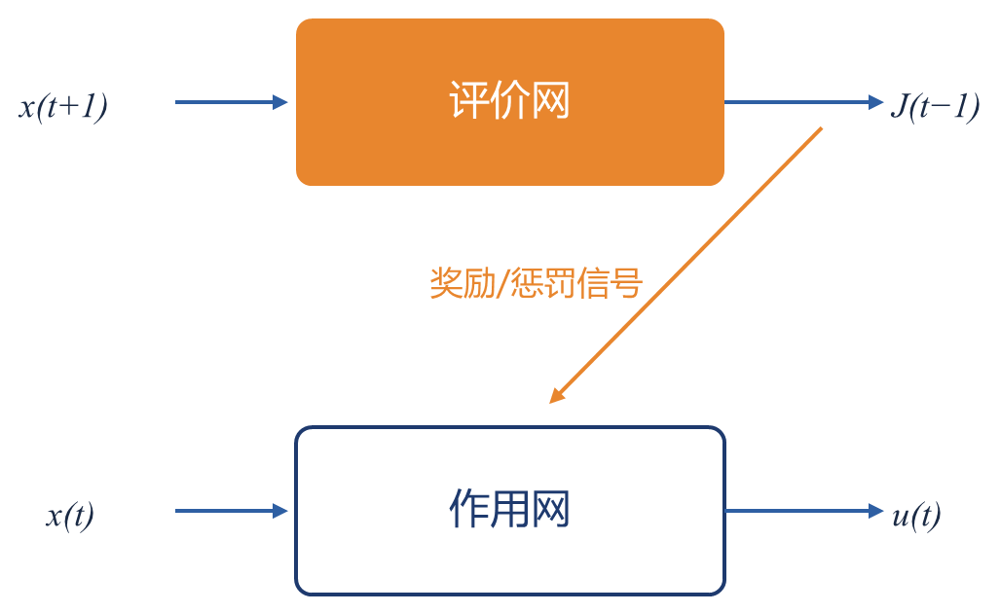
自适应评价网络：评价网产生评价信号 $J$，作用网产生控制作用 $u(t)$｜重绘版 PPT 第 11 页
4. 神经网络的逼近能力（P12–15）
首先要搞清楚到底什么样的被控系统可以用神经网络来描述。对于众多的神经网络类型来说，要得到一个统一的神经网络逼近理论是不现实的，况且还有很多神经网络结构的逼近性问题至今尚未得到证明。但多层前向传播神经网络能够相当好地逼近许多实际问题中的非线性函数。
含有两个隐含层的前向传播神经网络，且神经元激励函数为单调的 S 型函数，则此神经网络能够得到合适的逼近精度。对于在紧凑集中的任何平方可积函数，可以通过有限个隐含神经元组成的二层前向传播神经网络来逼近，并能达到任意逼近精度。考虑具有单个隐含层的前向传播神经网络，其输出属于集合：
$$\Sigma(\Psi)=\Bigl\{f:R^{n}\rightarrow R:\ f(x)=\sum_{j} v_j\,\Psi(\tilde{x}^{T}w_j);\ \ x\in R^{n},\ v_j\in R,\ w_j\in R^{n+1},\ j=1,2,\dots,q\Bigr\}$$
其中：$x$ 表示 $n$ 维输入矢量，$\tilde{x}=(1,x^{T})^{T}$；$v_j$ 表示隐含层第 $j$ 个神经元到输出层的权值；$w_j$ 表示输入矢量到隐含层第 $j$ 个神经元的权值矢量（$j=1,2,\dots,q$，$q$ 为隐含层神经元个数）；$\Psi(\cdot)$ 为隐含层神经元特性。
定义 5-1（S 型函数）
如果函数 $\Psi(\cdot):R\rightarrow[0,1]$ 是非递减函数，且满足
$$\lim_{\lambda\rightarrow+\infty}\Psi(\lambda)=1,\qquad \lim_{\lambda\rightarrow-\infty}\Psi(\lambda)=0$$
则称函数 $\Psi(\cdot)$ 为 S 型函数。
定义 5-2（距离函数 $\rho$）
给定的函数空间 $S$，设 $f,g,h\in S$。则距离函数 $\rho$ 满足以下条件：
① 正定性：$\rho(f,g)\geq 0$，且仅当 $f=g$ 时等号成立；② 对称性：$\rho(f,g)=\rho(g,f)$；③ 三角不等式关系：$\rho(f,g)\leq\rho(f,h)+\rho(h,g)$。
定义 5-3（$\rho$-稠密）
一个度量空间 $(X,\rho)$ 中的子集 $S$ 称为是在子集 $T$ 上的 $\rho$-稠密，只有当对于任意一个给定的 $\varepsilon>0$，对所有的 $t\in T$，存在一个 $s\in S$，有 $\rho(s,t)<\varepsilon$。
定理 5-1
若神经元的激励函数 $\Psi(\cdot)$ 是 S 型连续函数，那么 $\Sigma(\Psi)$ 在 $C(U)$ 中是 $\rho$-稠密。
这个定理说明：只要是有限空间中的连续函数 $g(x)$，总存在具有上述神经元特性 $\Psi(\cdot)$ 的三层网络 $\Sigma(\Psi)$，使得其输出函数 $f(x)$ 能够以任意精度逼近 $g(x)$。
对于非连续函数是否也有类似的神经网络来逼近它呢？如果能够实现这样的逼近，则非连续函数 $g(x)$ 应该满足什么样的条件？Hornik 等人在 1989 年发表论文中阐明了多层前向传播神经网络可以逼近任意连续函数或分段连续函数。
PPT 第 17–42 页
二、非线性动态系统的神经网络辨识
1. 什么是系统辨识？（P17）
系统建模是神经网络的最早应用。L. A. Zadeh 曾经下过这样的定义：
辨识的定义（Zadeh）
“辨识是在输入和输出数据的基础上，从一组给定的模型中，确定一个与所测系统等价的模型”。
使用非线性系统的输入输出数据来训练神经网络可认为是非线性函数的逼近问题。多层前向传播网络能够逼近任意 $L_2$ 非线性函数。
2. 系统辨识的三要素（P18–21）
- ① 模型的选择神经网络用于系统辨识的实质就是选择适当的神经网络模型来逼近实际系统，即 $\hat{S}_M$ 为神经网络模型类，$\hat{P}\in\hat{S}_M$ 为一神经网络。考虑到多层前向传播网络具备良好的学习算法，本章选择多层前向传播网络为模型类 $\hat{S}_M$，$\hat{P}$ 为一能充分逼近实际系统而又不过分复杂的多层网络。
- ② 输入信号的选择从时域上看，要求系统的动态过程在辨识时间内必须被输入信号持续激励，即输入信号必须充分激励系统的所有模态；从频域来看，要求输入信号的频谱必须足以覆盖系统的频谱。
- ③ 误差准则的选择误差准则是用来衡量模型接近实际系统的标准，它通常表示为一个误差的泛函：
$$E(W)=\sum_{k} f\bigl[e(k)\bigr],\qquad f\bigl[e(k)\bigr]=e^{2}(k)$$
3. 神经网络辨识的五个特点（P22）
一旦三大要素确定以后，神经网络的辨识就归结为一个最优化问题。神经网络辨识具有以下五个特点：
- 不要求建立实际系统的辨识格式。
- 可以对本质非线性系统进行辨识，而且辨识是通过在网络外部拟合系统的输入/输出，网络内部隐含着系统的特性。因此这种辨识是由神经网络本身实现的，是非算法式的。
- 辨识的收敛速度不依赖于待辨识系统的维数，只与神经网络本身及其所采用的学习算法有关；传统的辨识方法随模型参数维数的增大而变得很复杂。
- 由于神经网络具有大量的连接，这些连接之间的权值在辨识中对应于模型参数，通过调节这些权值使网络输出逼近系统输出。
- 神经网络作为实际系统的辨识模型，实际上也是系统的一个物理实现，可以用于在线控制。
4. 神经网络辨识模型的结构（P23–26）
两类结构：前向建模法 · 逆模型法。
（1）前向建模法（P24）
利用神经网络来逼近非线性系统的前向动力学模型：
$$y_N(k+1)=\tilde{f}\bigl(y(k),\dots,y(k-n+1),u(k),\dots,u(k-m+1)\bigr)$$
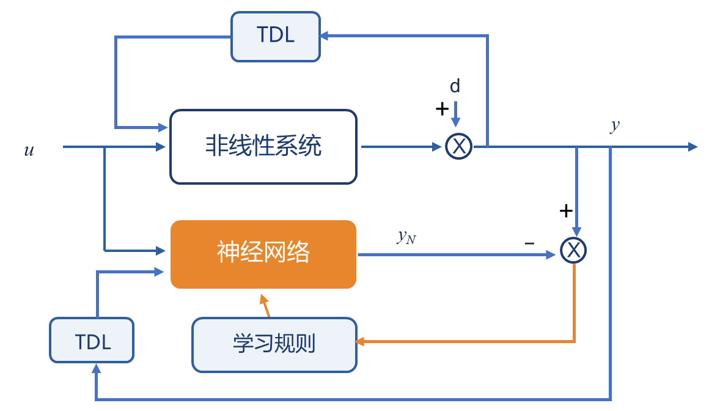
前向建模法：TDL 抽头延迟线提供历史输入输出，$e=y-y_N$ 经学习规则调整网络｜重绘版 PPT 第 24 页
（2）逆模型法·直接法（P25）
逆向建模最直接的方法是：将系统输出作为网络的输入，网络输出与其期望输出即系统的输入进行比较得到误差，作为此神经网络训练的信号。
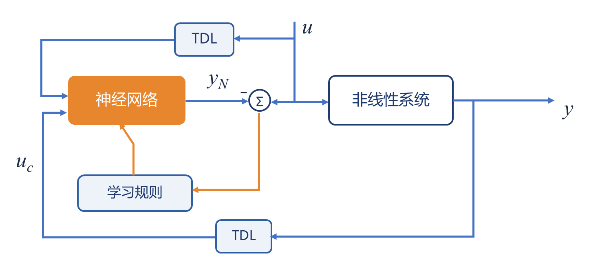
逆模型法（直接法）：以系统输出 $y$ 为网络输入，$e=u-y_N$ 训练逆模型｜重绘版 PPT 第 25 页
（3）逆模型法存在的问题与实用逆模型法（P26）
- 学习过程不一定是目标最优的，可以采用下图所示的实用逆模型法；
- 一旦非线性系统对应关系不是一对一的，那么不准确的逆模型可能会被建立。
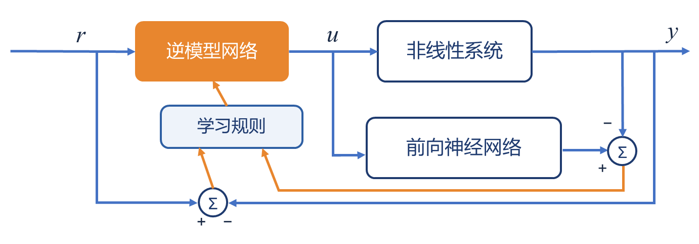
实用逆模型法：经前向神经网络回传误差训练逆模型网络｜重绘版 PPT 第 26 页
5. 非线性系统前向建模的两种结构（P27）
并行结构
$$\hat{y}(k+1)=N\bigl[\hat{y}(k),\hat{y}(k-1),\dots,\hat{y}(k-n+1),u(k),\dots\bigr]$$
网络输出反馈回网络输入。
串行结构（收敛性较好）
$$\hat{y}(k+1)=N\bigl[y(k),y(k-1),\dots,y(k-n+1),u(k),\dots\bigr]$$
用系统实际输出作网络输入。
6. 状态空间形式与辨识算子（P28–29）
对于非线性系统：
$$X(k+1)=\Phi\bigl[X(k),U(k)\bigr],\qquad Y(k+1)=\Psi\bigl[X(k+1)\bigr]$$
其中 $X(k)$、$U(k)$、$Y(k)$ 分别为 $n$ 维、$p$ 维、$m$ 维状态矢量序列。神经网络系统辨识的基本思想是利用神经网络的非线性映射特性来逼近动态系统的非线性函数 $\Phi$ 和 $\Psi$。
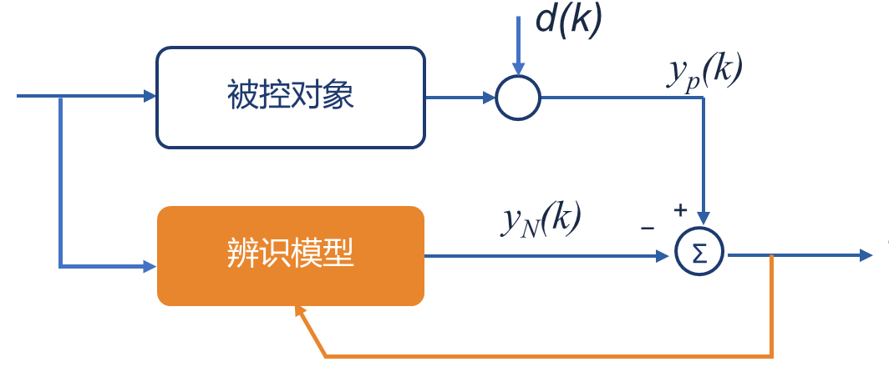
状态空间系统的神经网络辨识结构（$e_p(k)=y_p(k)-y_N(k)$）｜重绘版 PPT 第 28 页
设系统的输入空间为 $\Omega_u$，输出空间为 $\Omega_g$，实际系统可以表示为一个从输入空间到输出空间的算子 $P:\Omega_u\rightarrow\Omega_g$；给定一个模型类 $S_M$，设 $P\in S_M$，则辨识的目的就是确定一个 $S_M$ 的子集类 $\hat{S}_M\subseteq S_M$，使其中存在 $\hat{P}\in\hat{S}_M$，且 $P$ 在给定的准则下，$\hat{P}$ 为 $P$ 的一个最佳逼近：
$$\bigl\|y_N-y_p\bigr\|=\bigl\|\hat{P}(u)-P(u)\bigr\|\leq\varepsilon\qquad \forall\,u\in\Omega_u$$
7. 四种辨识模型（P30）
讨论非线性动态系统的神经网络辨识的四种辨识模型，其中 $f$、$g$ 分别为非线性函数，$[u(k),y(k)]$ 表示在 $k$ 时刻的输入-输出对：
| 模型 | 方程 |
|---|
| Ⅰ | $y(k+1)=\sum\limits_{i=0}^{n-1}\alpha_i\,y(k-i)+g\bigl[u(k),u(k-1),\dots,u(k-m+1)\bigr]$ |
| Ⅱ | $y(k+1)=f\bigl[y(k),y(k-1),\dots,y(k-n+1)\bigr]+\sum\limits_{i=0}^{m-1}\beta_i\,u(k-i)$ |
| Ⅲ | $y(k+1)=f\bigl[y(k),y(k-1),\dots,y(k-n+1)\bigr]+g\bigl[u(k),u(k-1),\dots,u(k-m+1)\bigr]$ |
| Ⅳ | $y(k+1)=f\bigl[y(k),y(k-1),\dots,y(k-n+1),u(k),u(k-1),\dots,u(k-m+1)\bigr]$ |
8. 假定条件（P31）
- 线性部分的阶次 $n$、$m$ 已知；
- 系统是稳定的，即对于所有给定的有界输入其输出响应必定也是有界的。反映在模型Ⅰ上要求线性部分的特征多项式
$$z^{n}-\alpha_0 z^{n-1}-\dots-\alpha_{n-1}=0$$
的根应全部位于单位圆内。
- 系统是最小相位系统，反映在模型Ⅱ上要求
$$\beta_0 z^{m}+\beta_1 z^{m-1}+\dots+\beta_{m-1}=0$$
的零点全部位于单位圆内。
- $\{u(k-i),\ i=0,1,\dots\}$ 与 $\{y(k-j),\ j=0,1,\dots\}$ 可以量测。
9. 神经网络的辨识途径（P32）
- 参数已知线性部分的参数已知——可归结为带时滞的多层感知网络模型的学习问题，只是导师学习信号有所不同。
- 参数未知线性部分的参数未知——可归结为带时滞的多层感知网络模型的学习和线性系统的参数估计问题。
PPT 第 33–42 页
10. 模型Ⅰ、Ⅱ：线性部分已知的训练结构（P33）
对于模型Ⅰ、Ⅱ：如果线性部分已知，系统实际输出与模型输出（神经网络输出与线性部分输出之和）的差可以用 BP 算法来训练神经网络模型。
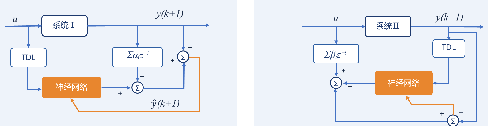
线性部分已知时模型Ⅰ、Ⅱ的训练结构｜重绘版 PPT 第 33 页
11. 线性部分未知：改进的 BP 迭代学习算法（P34–36）
对于模型Ⅰ、Ⅱ，如果线性部分未知，采用改进的 BP 迭代学习算法。设线性部分的未知参数用矢量 $\alpha$ 表示，非线性部分的神经网络模型参数用 $W$ 阵表示。针对模型Ⅰ：
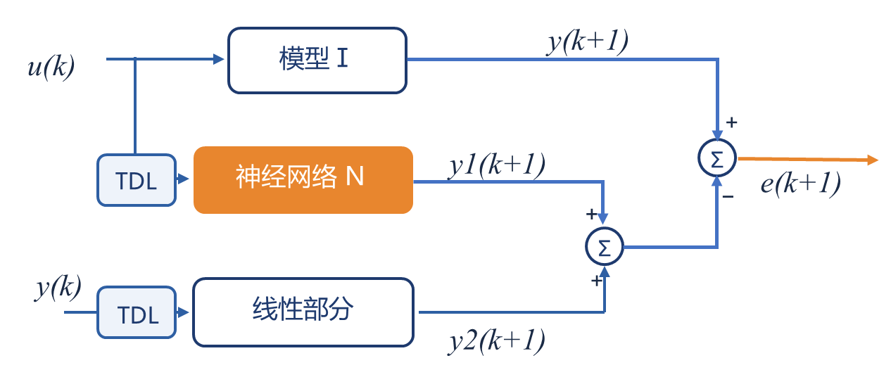
模型Ⅰ的分解训练结构：$y1(k+1)$（神经网络输出）$+y2(k+1)$（线性部分输出）与系统输出比较得 $e(k+1)$｜重绘版 PPT 第 34 页
改进的 BP 迭代学习算法（针对模型Ⅰ，RLS + BP）：
$$\hat{\alpha}(l+1)=\hat{\alpha}(l)+K(l+1)\bigl[Z(l+1)-\varphi^{T}(l+1)\hat{\alpha}(l)\bigr]$$
$$K(l+1)=P(l)\varphi(l+1)\bigl[\lambda+\varphi^{T}(l+1)P(l)\varphi(l+1)\bigr]^{-1}$$
$$P(l+1)=\bigl[I-K(l+1)\varphi^{T}(l+1)\bigr]P(l)$$
$$w_{pj}(l+1)=w_{pj}(l)+\eta\,\delta_{pj}o_{pj}+\mu\,\Delta w_{pj}(l)$$
$$\delta_{pj}=\begin{cases}(t_{pj}-o_{pj})\,f'(Net_{pj}) & \text{Output Layer}\\[3pt] \bigl(\sum_{k}\delta_{pk}w_{kj}\bigr)f'(Net_{pj}) & \text{Hidden Layer}\end{cases}$$
$$\varphi^{T}(l+1)=\bigl[y(l),y(l-1),\dots,y(l-n+1)\bigr]$$
交替近似由于线性模型和非线性模型的期望输出 $Z(l+1)$ 和 $t_{pj}$ 在这里都是未知的，已知的只是两个模型的输出之和，而它们的期望值应该是系统在当前时刻 $k+1$ 的实际输出矢量 $y(k+1)$ 值。因此在实际对如上算法进行计算时，可交替使用 $y(k+1)-y2(k+1)$ 和 $y(k+1)-y1(k+1)$ 去近似地代替 $Z(k+1)$ 和 $t_{pj}$。在初始条件完全未知的情况下可以取：
$$\hat{\alpha}(0)=0;\qquad P(0)=\rho I$$
其中 $\rho$ 为比较大的数。
12. 举例 5-1（P37–39）
例 5-1
考虑以下模型：
$$y(k+1)=a\cdot y(k)+b\cdot y(k-1)+g(u)$$
其中 $a=0.3,\ b=0.6$，$g(u)=u^{3}+0.3u^{2}-0.4u$。试辨识该系统。
解：线性部分采用递推最小二乘学习法；非线性部分采用前向传播多层神经网络来逼近。选择神经网络结构为 $\Pi_{1,8,4,1}$，$\eta=0.2$，$\beta=0$。初值取 $\hat{\alpha}(0)=[a\ b]^{T}$ 的零估计，$P(0)=10\,I$（$\rho$ 取较大值）。
为了验证辨识效果，采用校验输入信号：
$$u(k)=\sin\frac{2\pi k}{100},\qquad k=0,1,2,\dots,100$$
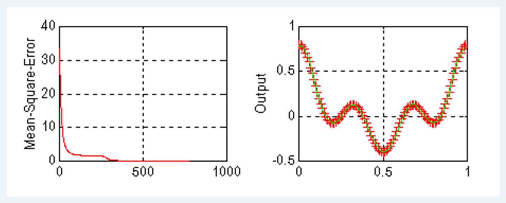
例 5-1 辨识结果：左图为均方误差（Mean Square Error）随训练次数的收敛曲线，右图为校验输入下系统输出与神经网络模型输出的逼近曲线（$k=0\sim100$）｜原图（PPT 第 39 页）
13. 模型Ⅲ：两个神经网络分别逼近（P40–42）
对于模型Ⅲ，可以用一个 NN 来逼近，也可以用两个 NN 来逼近。下面考虑第二种情况：
- $N_f$ 网络用来逼近可分离的非线性函数之一 $f(\cdot)$；
- $N_g$ 网络用来逼近可分离的非线性函数之二 $g(\cdot)$。
模型Ⅲ方程：
$$y(k+1)=f\bigl[y(k),\dots,y(k-n+1)\bigr]+g\bigl[u(k),\dots,u(k-m+1)\bigr]$$
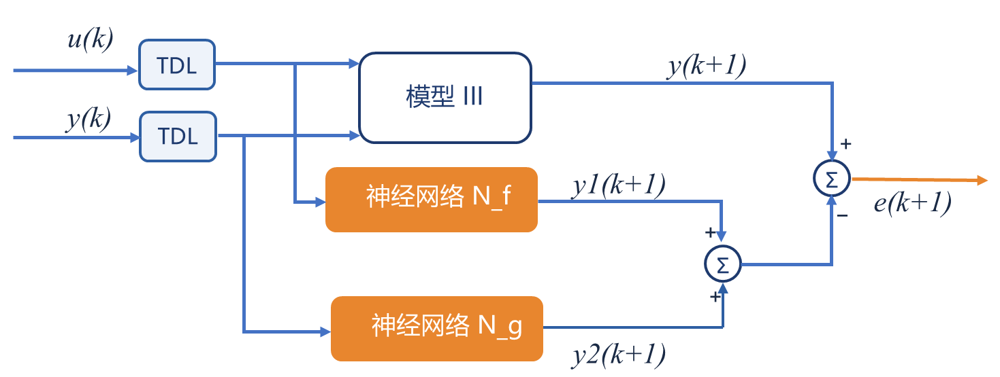
模型Ⅲ的双网络辨识结构：$y_N(k+1)=y_f(k+1)+y_g(k+1)$，$e=y-y_N$ 分别回传训练 $N_f$、$N_g$｜重绘版 PPT 第 40 页
选指标函数：
$$E=\sum_{p}E_p=\frac{1}{2}\sum_{p}\Bigl[t_{pj}-\bigl(o_{pj}^{1}+o_{pj}^{2}\bigr)\Bigr]^{2}$$
根据 BP 算法的推导思路可得广义误差：
$$\delta_{pj}^{1(L)}=\Bigl(t_{pj}-\bigl(o_{pj}^{1(L)}+o_{pj}^{2(L)}\bigr)\Bigr)f_1'\bigl(Net_{pj}^{1(L)}\bigr),\qquad
\delta_{pj}^{2(L)}=\Bigl(t_{pj}-\bigl(o_{pj}^{1(L)}+o_{pj}^{2(L)}\bigr)\Bigr)f_2'\bigl(Net_{pj}^{2(L)}\bigr)$$
$$\delta_{pj}^{1(r)}=f_1'\bigl(Net_{pj}^{1(r)}\bigr)\sum_{k}\delta_{pk}^{1(r+1)}w_{kj}^{1(r+1)},\qquad
\delta_{pj}^{2(r)}=f_2'\bigl(Net_{pj}^{2(r)}\bigr)\sum_{k}\delta_{pk}^{2(r+1)}w_{kj}^{2(r+1)}$$
神经网络系数更新公式为：
$$\Delta w_{pj}^{(1)}=\eta_p\,\delta_{pj}^{(1)}o_{pj}^{(1)},\qquad \Delta w_{pj}^{(2)}=\eta_p\,\delta_{pj}^{(2)}o_{pj}^{(2)}$$
交替修正在整个算法的计算过程中，交替使用网络的实际输出值 $o_{pj1}(L)$ 和 $o_{pj2}(L)$，使得广义误差信号可以不断地进行计算和修正，直至最终收敛。
PPT 第 44–51 页
三、神经网络控制的学习机制
1. 神经元控制器的学习目标（P44）
学习目标
神经元控制器的目的在于如何设计一个有效的神经元网络去代替传统控制器的作用，使得系统的输出跟随系统的期望输出。为了达到这个目的，神经网络的学习方法就是寻找一种有效的途径进行网络连接权阵或网络结构的修改，从而使得网络控制器输出的控制信号能够保证系统输出跟随系统的期望输出。
学习机制分类（P45）：监督式学习（有导师指导下的控制网络学习）——离线学习法 · 在线学习法 · 反馈误差学习法 · 多网络学习法；增强式学习（通过某一评价函数指定下的学习）。
2. 离线学习法（P46）
适合静态环境。网络离线训练中选择的性能指标为 $u-u_c$ 的平方误差极小——这一指标并不能保证系统的最终性能 $y_d-y$ 的平方误差极小。
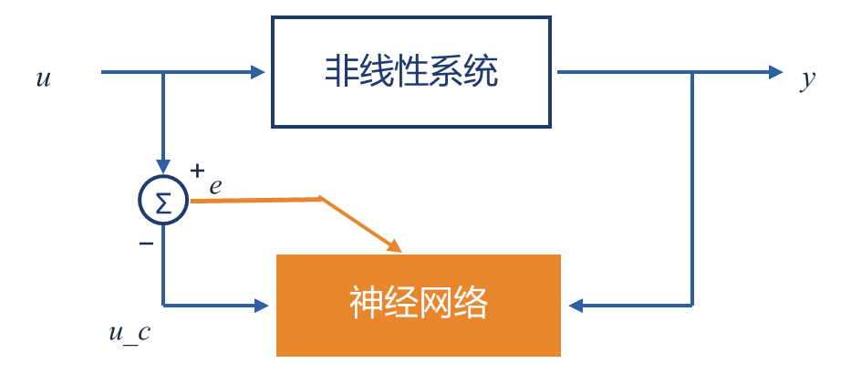
离线学习法：以 $u-u_c$ 平方误差极小为指标训练网络逆模型｜重绘版 PPT 第 46 页
3. 在线学习法（P47–48）
找出一个最优控制量 $u$ 使得系统输出 $y$ 趋于期望输出 $y_d$。权阵的调整应该使得 $y_d-y$ 的误差减少最快。适合模型已知的动态环境。
学习算法：采用最速下降法，假设系统的 Jacobian 矩阵已知：
$$w_{ji}(k+1)=w_{ji}(k)-\eta\frac{\partial E_p}{\partial w_{ji}}
=w_{ji}(k)+\eta\bigl(y_d(k)-y(k)\bigr)\cdot\frac{\partial y(k)}{\partial w_{ji}}
=w_{ji}(k)+\eta\bigl(y_d(k)-y(k)\bigr)\cdot\frac{\partial y(k)}{\partial u(k)}\cdot\frac{\partial u(k)}{\partial w_{ji}}$$
4. 反馈误差学习法（P49）
适用于非线性系统线性绝对占优条件下的网络学习。
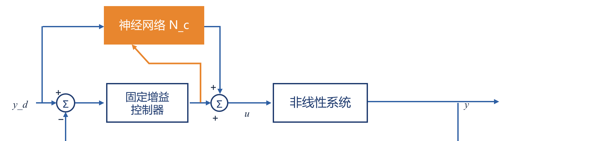
反馈误差学习法：固定增益控制器提供反馈误差信号训练 $N_c$｜重绘版 PPT 第 49 页
5. 多神经网络学习法（P50）
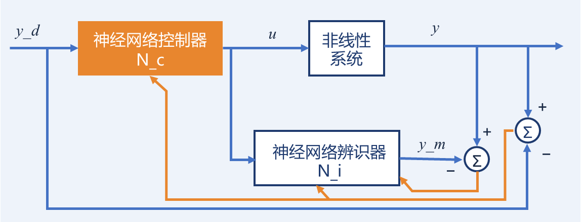
多神经网络学习法（一）：辨识器 $N_i$ 提供 $y_m$，$e=y-y_m$ 回传训练控制器 $N_c$｜重绘版 PPT 第 50 页
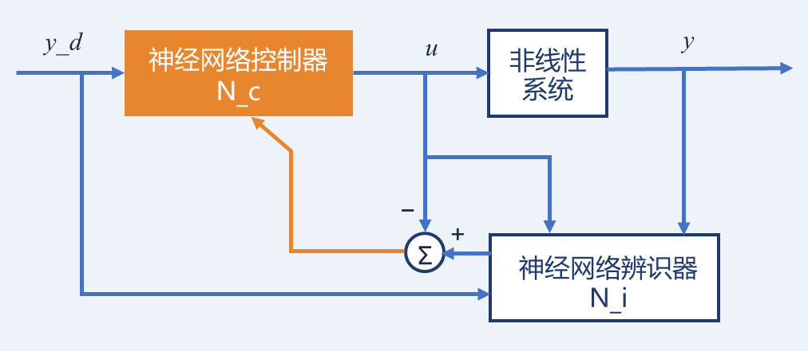
多神经网络学习法（二）：逆模型辨识器 $N_i$ 给出期望控制 $u_d$，$e=u-u_d$ 训练控制器｜重绘版 PPT 第 50 页
6. 增强式学习（P51）
- 当某些被控系统的导师信号无法得到时，期望输出就没有了。增强型学习就是利用当前控制是否成功来决定下一次控制该如何走的学习方式。
- 修正的办法是：对某一成功的行为进行鼓励，而对不成功的行为进行惩罚。
- 用神经网络来实现时，则可在权值空间进行调整。
PPT 第 53–66 页
四、神经网络控制器的设计
神经网络控制的设计方法有四种：直接逆模型控制法 · 直接网络控制法 · 多网络自学习控制法 · 单一神经元控制。
1. 直接逆模型控制法（P54–56）
最直观的一种神经网络控制器实现方法。基本思想：假设被控系统可逆，通过离线建模得到系统的逆模型网络，然后用这一逆网络模型去直接控制被控对象。
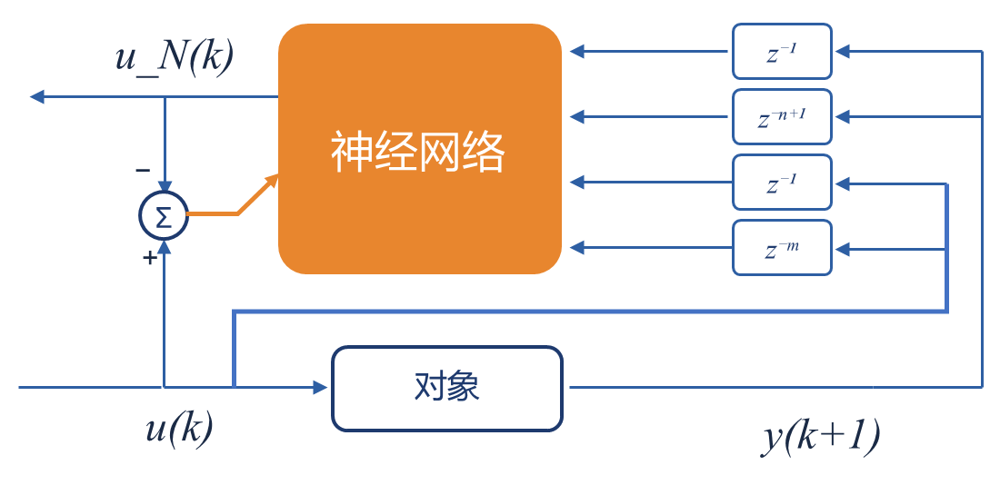
图 3-2-27 直接逆控制的训练结构示意图（$u_N(k)$ 与 $u(k)$ 的偏差调整网络）｜重绘版 PPT 第 54 页
考虑如下单输入单输出系统：
$$y(k+1)=f\bigl(y(k-1),\dots,y(k-n+1),u(k),\dots,u(k-m)\bigr)$$
$y$：系统的输出变量；$u$：系统的输入变量；$n$：系统的阶数；$m$：输入信号滞后阶；$f(\cdot)$：任意的线性或非线性函数。
如果已知系统阶次 $n$、$m$，并假设系统可逆，则存在函数 $g(\cdot)$，有：
$$u(k)=g\bigl(y(k+1),\dots,y(k-n+1),u(k-1),\dots,u(k-m)\bigr)$$
若能用一个多层前向传播神经网络来实现，则网络的输入输出关系为：
$$u_N=\Pi(X)$$
式中：$u_N$ 为神经网络的输出，它表示训练完成后神经网络产生的控制作用；$\Pi$ 为神经网络的输入输出关系式，它用来逼近被控系统的逆模型函数 $g(\cdot)$；$X$ 为神经网络的输入矢量：
$$X=\bigl[y(k+1),y(k),\dots,y(k-n+1),u(k-1),\dots,u(k-m)\bigr]^{T}$$
将神经网络输入矢量 $X$ 中的 $y(k+1)$ 用期望系统输出值 $y_d(k+1)$ 去代替，就可以通过神经网络 $\Pi$ 产生期望的控制量 $u$。即：
$$X=\bigl[y_d(k+1),y(k),\dots,y(k-n+1),u(k-1),\dots,u(k-m)\bigr]^{T}$$
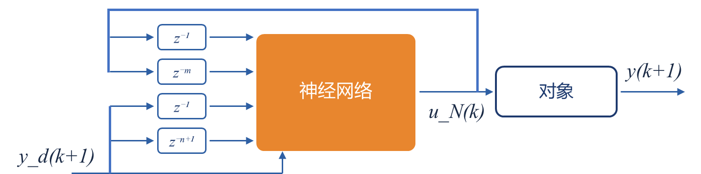
图 3-2-28 直接网络逆模型控制的结构示意图（$y_d(k+1)$ 代替 $y(k+1)$ 作网络输入）｜重绘版 PPT 第 54 页
2. 直接网络控制法（P57–62）
直接逆模型控制法由于缺乏学习机制，且在控制器的设计中又没有考虑到系统本身的输入输出状态，因此一旦系统运行的环境、参数发生变化时，这类控制器就无法适应了。直接网络控制法是在神经网络的输入端引入了系统的状态信号，并将学习机制实时在线地用于网络控制器的调整和改善。
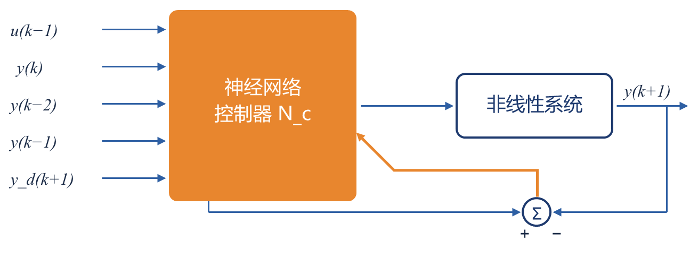
直接网络控制法结构：网络输入含系统状态 $u(k-1),y(k),\dots$ 与 $y_d(k+1)$，$e=y_d-y$ 在线调整｜重绘版 PPT 第 57、60 页
例（P58–62）
考虑被控系统：
$$y(k+1)=\frac{y(k)y(k-1)y(k-2)u(k-1)\bigl[y(k-2)-1\bigr]+u(k)}{1+y^{2}(k-1)+y^{2}(k-2)}$$
假设动力学逆模型成立，即有 $u(k)=g\bigl[y(k+1),y(k),y(k-1),y(k-1),u(k-1)\bigr]$。试用直接网络控制法控制。
解：构造神经网络结构为 $\Pi_{5,25,12,1}$。期望输出为：
$$y_d(k)=\sin\frac{2\pi k}{100}+0.2\sin\frac{6\pi k}{100}$$
注意：这里我们用 $y_d(k+1)$ 代替 $y(k+1)$，而 $y(k),\dots$ 仍然用系统实际输出，而不是期望输出。控制结构图同上图。
选目标函数：
$$E=\sum_{p}E_p=\frac{1}{2}\sum\bigl(y_d(k)-y(k)\bigr)^{2}$$
假设：输出单元层的神经元为线性单元、其余层的神经元为 Sigmoid 激励元。则学习算法为：
$$w_{ij}(k+1)=w_{ij}(k)+\eta\,\delta_{pj}o_{pi}$$
输出层：
$$\delta_{pj}=\bigl(y_d(k)-y(k)\bigr)\frac{dy(k)}{du(k)}
=\bigl(y_d(k)-y(k)\bigr)\frac{1}{1+y^{2}(k-2)+y^{2}(k-3)}$$
隐含层：
$$\delta_{pj}=o_{pj}\bigl(1-o_{pj}\bigr)\sum_{l}\delta_{pl}w_{lj}$$
取 $\eta=0.05$，学习 100 次。学习结果（系统输出对期望输出的跟踪曲线）如下：
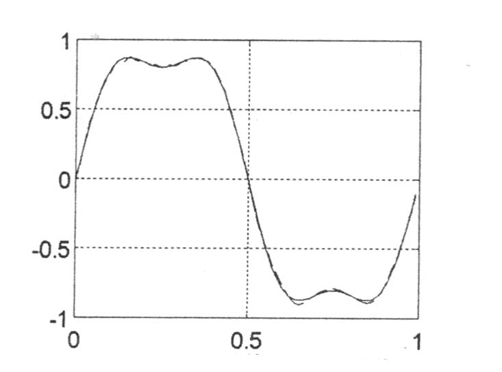
直接网络控制法学习结果：$\eta=0.05$、学习 100 次后，系统输出 $y$ 对期望输出 $y_d$ 的跟踪曲线（$k=0\sim1$ 归一化区间，两线几乎重合）｜重绘版 PPT 第 62 页
3. Jacobian 矩阵难以得到时的近似方法（P63）
- 摄动法用 $\dfrac{\Delta y_i}{\Delta u_i}$ 代替 $\dfrac{\partial y_i}{\partial u_i}$；
- 符号函数法采用符号函数 $\mathrm{sgn}\!\left(\dfrac{y_i}{u_i}\right)$ 代替 $\dfrac{\partial y_i}{\partial u_i}$；
- 前向神经网络模型法采用另一神经网络模型来仿真系统的动力学模型，用 $\dfrac{\partial \hat{y}_i}{\partial u_i}$ 代替 $\dfrac{\partial y_i}{\partial u_i}$；
- 多网络自学习控制法见下。
4. 多网络自学习控制法（P64）
基本思想：利用逆动力学模型和系统的期望输出 $y_d(k+1)$ 去构造一个期望的控制量 $u_d(k)$，从而解决了神经控制器 $N_c$ 在系统模型未知情况下的学习问题。
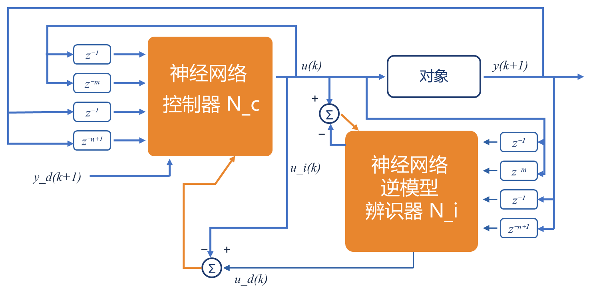
多网络自学习控制结构：辨识器 $N_i$（逆动力学模型）与 $y_d(k+1)$ 构造期望控制 $u_d(k)$，训练 $N_c$｜重绘版 PPT 第 64 页
5. 单一神经元控制（P65–66）
适用于单输入单输出系统。权值更新：
$$w_i(t+1)=\gamma\,w_i(t)+\eta\,p_i(t)$$
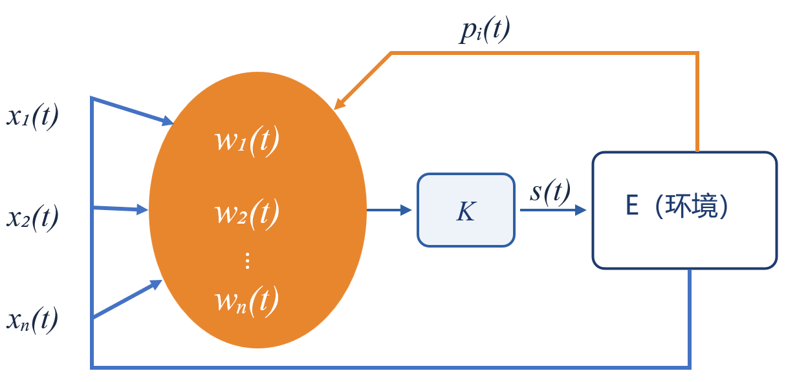
单一神经元控制结构：输入状态 $x_i(t)$ 加权求和，经比例系数 $K$ 产生控制信号 $s(t)$；$p_i(t)$ 为学习信号｜重绘版 PPT 第 65 页
如设定值 $r(t)$、对象输出测量值 $y(t)$ 等，转换部件的输出为神经元学习所需的状态，如设定值 $r(t)$、误差 $e(t)$、误差变化 $\Delta e(t)$ 等；控制信号 $u(t)$ 由神经元通过关联搜索来产生。根据以上模型，采用联想式学习方法，可以得出规范化神经元非模型控制方法：
$$u(t)=\frac{K\displaystyle\sum_{i=1}^{n}w_i(t)\,x_i(t)}{\displaystyle\sum_{i=1}^{n}w_i(t)}$$
$$w_i(t+1)=w_i(t)+\eta\,\bigl[r(t)-y(t)\bigr]\,u(t)\,x_i(t)$$
式中 $x_i(t)\ (i=1,2,\dots,n)$ 为神经元的输入状态；$K$ 为神经元的比例系数；$\eta$ 为神经元的学习速率。